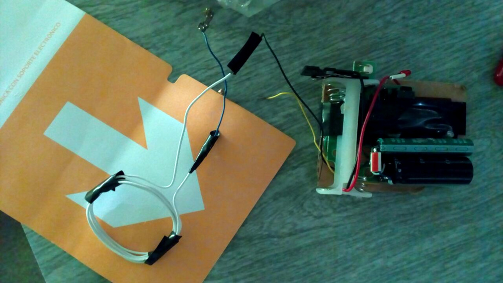

E-Voting from Argentina to the World
Obrigado pelo convite!
About Us
Alfredo Ortega: aka CyberGaucho, he's always disrupting systems, from BSD, KVM and Android to electoral voting machines and the Chamber of Deputies. He has a large list of CVE's to his credit, and enjoys being called a whitehat.
Iván Barrera Oro: aka HacKan, he's passionate about electronics and informatics. He enjoys gaming, coding, designing and building stuff, travelling, skiing, wine and pwn.
Paradigms
Any voting system must determinate who won the election, and convice the losers that they lost.
No technology can fix a political issue.
If the vote must be kept secret*, no current technology other than pen and paper can solve the issue.
Argentine Electoral System
Briefly Explained
Two-round system.
Uses pre-printed pre-marked party ballots (French ballot system).
Alternatively, unique paper ballots are used in certain cases: inmates, Argentines abroad.
Vote must be universal, equal, mandatory and secret.
Overall procedure
Scrutiny
- Polling station:
- Done by the station's president watched over by parties' prosecutors
- Counts votes, makes telegram and acts
- Provisory:
- Done by executive branch
- Counts telegrams
- Final:
- Done by judicial branch
- Counts acts
Our involvement
We advised deputies and senators at the Congress and helped stop delay the implementation of e-voting nation-wide.
However, despite what you are about to see, a law is going to be passed next week in CABA to use e-voting (probably "Boleta Única Electrónica").
The same was going to happen nation-wide, and it was even going to be sooner, but... things happened (our coin value dropped, economy went sour).
Boleta Única Electrónica
(Vot.Ar®)
"Unique electronic ballot"
- We researched between 2015 and 2017. Full report and more at github.com/HacKanCuBa/informe-votar.
- All publicly reported issues were fixed by the vendor without any kind of reward (besides legal prosecution!) nor acknowledgment.
- Official audits confirmed some vulnerabilities.
- We got recognized by Dr. J. Alex Halderman (kudos!)
- E-Voting system with paper backup, based on Ubuntu Linux, written in Python + web front end (implemented crypto only recently).
- The vote is printed and stored in a RFID chip (ISO15693).
- The machine used to vote is then used to count those votes.
- It prints acts and telegram; transmits the telegram for the provisory scrutiny through Internet; assists (and is required) for the final scrutiny.

Some details on the machine


Data structure inside the Tag
K1 T2 T1 L1 C4 C3 C2 C1 D1...Dn W1 W2 W3 W4
| Type | Desc | Size (bytes) | Endianness | Stored as | Fixed value |
|---|---|---|---|---|---|
| K | Token | 1 | - | HEX | 0x1C |
| T | Tag category | 2 | little-endian | HEX | - |
| L | Data lenght | 1 | - | HEX | - |
| C | CRC32(Data) | 4 | little-endian | HEX | - |
| D | Data | n | - | ASCII | - |
| W | Write test? | 4 | - | ASCII | W_OK |
Tag Categories
COD_TAG_VACIO = '\x00\x00'
COD_TAG_VOTO = '\x00\x01'
COD_TAG_USUARIO_MSA = '\x00\x02'
COD_TAG_PRESIDENTE_MESA = '\x00\x03'
COD_TAG_RECUENTO = '\x00\x04'
COD_TAG_APERTURA = '\x00\x05'
COD_TAG_DEMO = '\x00\x06'
COD_TAG_VIRGEN = '\x00\x07'
COD_TAG_INICIO = '\x00\x7F'
COD_TAG_ADDENDUM = '\x00\x80'
COD_TAG_NO_ENTRA = '\x00\x45'
COD_TAG_DESCONOCIDO = '\xff\xff'
What we found?
The same old fears...
- Command Injection (medium threat): in QR code generator routine, exploited through polling station opening phase.
- Weak Authentication (high threat): trivial user authentication through fixed tag category allows easily crafted authentication tags.
- Multivote (critical threat): wrong implementation of vote counting routine allows several votes to be counted from the tag (fits about 10~12).
- Several danger indicators: poor code quality, tons of lines, several
evals, no internal audit process, non-specialized hardware.
Command Injection
def crear_qr(datos):
qr = None
fd, temp_path = mkstemp(suffix='.png', prefix='qr_tmp_')
tmpl_comando = u'qrencode -o %s -s%s -m0 -l%s "%s"'
comando = tmpl_comando % (temp_path, unicode(QR_PIXEL_SIZE),
QR_ERROR_LEVEL, u''.join(datos))
os.system(comando)
Exploit: input last name (or first name) and append command:
Bolsonaro;echo '#EleNão'
Weak Authentication
Exploit: craft a ballot with the Technician category: 0x1C0200.
Multivote
for elem in datos_tag.voto_categoria:
cod_categoria = elem["cod_categoria"].strip()
cod_candidato = elem["cod_candidatura"].strip()
if cod_candidato == COD_LISTA_BLANCO:
candidato = Candidato.one(codigo__endswith=cod_candidato,
cod_categoria=cod_categoria)
else:
candidato = Candidato.one(codigo__endswith="." + cod_candidato,
cod_categoria=cod_categoria)
candidatos.append(candidato)
Exploit: craft a ballot with many votes: 0x1C0100...
- Normal vote:
06CABA.1COM567DIP432JEF123 - Multivote:
06CABA.1COM567DIP432JEF123JEF123JEF123
Ward Boss
My Cheap Chip Zapper
NEMO
After those events, we were unable to get our hands on any other Argentine voting system.
But we can still comment a thing or two about them.
E-Voto
Altec
A company funded by the Province of Rio Negro.
Almost used in Tierra del Fuego in 2016.
We weren't able to actually audit this system, but it doesn't look good.
The voter identifies to the machine using a RFID card and its own fingerprint!
The voter chooses candidates from a touch screen, and finally a ticket is printed along with the vote stored in the card.
In turn, both the ticket and card are deposited in a ballot box and later counted using the same machine.
Vo.Co.Mi
Misiones Electoral Court
Javier was able to see it at an event named Smart Cities, in Buenos Aires, 2017, held at the same time as the Ekoparty (yet electoral officials said that voting machines weren't available to be inspected at Ekoparty).
The voter chooses candidates from a touch screen, and finally a ticket is printed, which in turn is deposited in a ballot box and later counted using the same machine.
Vot-E
UNCUYO
Designed by the National University of Cuyo.
The machine is a standard PC that runs a voting software over Windows.
The voting app crashed during a 30" system overview, and explorer.exe was needed to be killed, so there's not much to say about it...
The voter selects candidates from a touch screen and a standard printer connected to the computer prints a ballot, which is then deposited in the ballot box and counted with the same software.
EMS
Smartmatic
Arrives in Argentina in 2015 to compete for the CABA licitation, but loses to MSA.
Tested in primary elections in La Falda and Marcos Juarez, Cordoba, in July, 2015.
Provides, mostly, other electoral services such as telegram transmition and voter biometric identification.
These biometric devices store all of the data in a memory card, supposedly encrypted (never audited). At least one device "got lost".
In Venezuela, Smartmatic is investigated and charged with election tampering in 2017.
Miru Systems
South Korean electoral services provider, such as voting machines.
Note that South Korea votes with unique paper ballots :)
Our Government denies all of the following.
It was proved that in 2016 delegates from South Korean government visited Argentina: they wrote a memorandum.
Several machines were left in Customs, yet e-voting was not approved by Congress nor machines were designed!
When Miru arrived at the Democratic Republic of Congo, we were able to prove that there was a connection with Argentina :)
The Sentry contacted us and gave us a Congolese document presented by Miru Systems (we can't disclose the original document).
This document had covered-up information prepared to be used in Argentina.
We wrote a technical document based on it and publicly available info for them.
Conclusions
E-voting is a danger to democracy and it will be for a long, long time.
We can use modern technology in the electoral process, just avoid the vote casting phase.
We as hackers must get involved!
Perguntas?
Alguma dúvida?
Hack the planet!
Most of the info is based on our own investigation. Check the following sites:
Sources
- Alfredo Ortega sobre el voto electrónico en el Senado (15-11-2016)
- Si las “impresoras” no van a la ekoparty…
- El sistema de voto electrónico VoCoMi (Voto Codificado Misiones) en Smartcities Buenos Aires
- Vot-E UNCUYO
- El voto electrónico debutó en La Falda y Marcos Juárez
- Smartmatic, de Venezuela a la Argentina